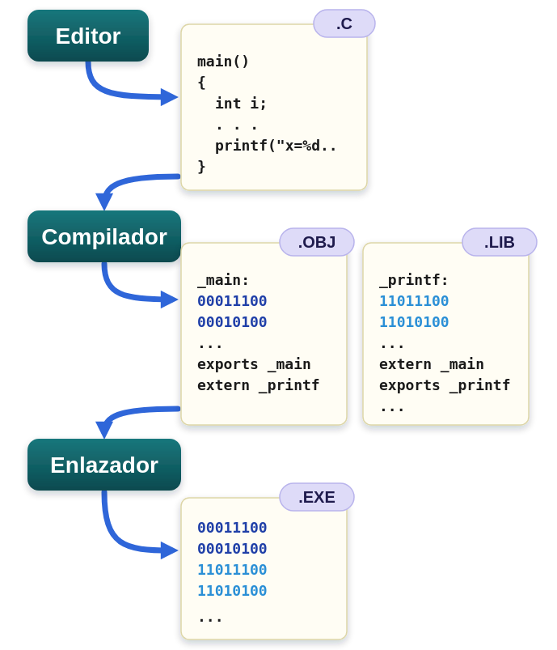
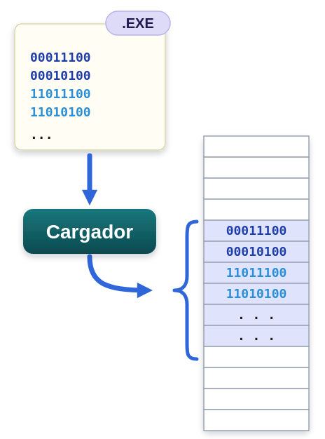
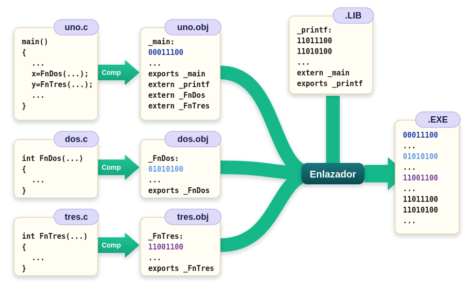
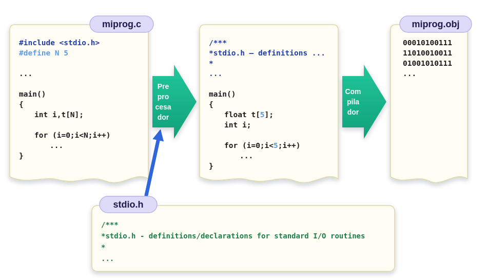
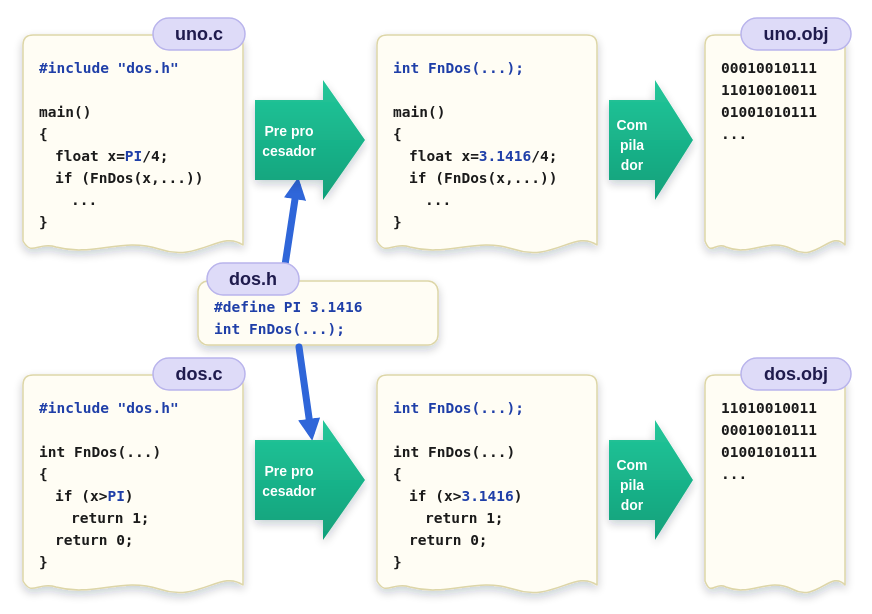
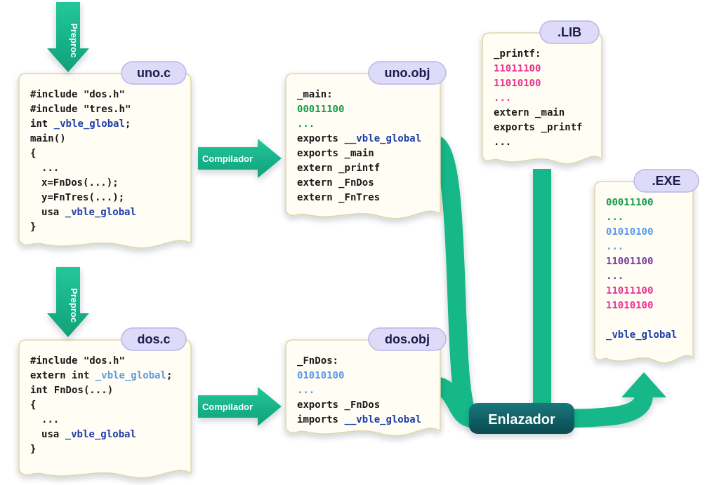
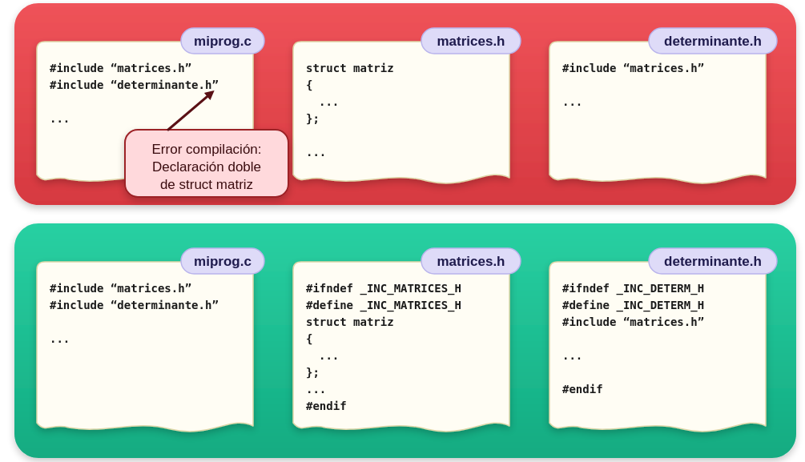

Programación en Lenguaje C
Ingeniería de Sistemas y Automática - Universidad de Oviedo
#include, #define, #pragma).c) vs. Archivos de cabecera (.h)extern)Pasos en la obtención de código máquina:

▫ Ejecución de un programa:

Permite dividir programas complejos en múltiples ficheros fuente independientes:
.c se compila de forma aislada generando su correspondiente fichero objeto .obj..obj y las librerías estáticas (.lib).
# y ocupan una sola línea:#include
Inclusión de un archivo de cabecera.
#define
Define constantes simbólicas o macros sustituibles por texto.
#if / #ifdef / #endif
Permiten la compilación condicional del bloque de código.
#pragma / #error
Instrucciones específicas al compilador o generación de errores customizados.
Las directivas del preprocesador actúan sobre el texto que va a ser compilado, no en tiempo de ejecución.

Cuando se realiza compilación separada, se utiliza la directiva #include para que todos los módulos utilicen las mismas definiciones (prototipos de función, constantes, etc).

.c) vs. Cabeceras (.h).c)
.obj..h)
#include en los .c.;struct, enum, typedef)#include necesarios
Es práctica habitual asociar un fichero de cabecera .h a cada módulo .c. Este debe contener únicamente las declaraciones imprescindibles (y no más) para utilizar las funciones públicas de dicho módulo desde otros archivos.
En caso de utilizar variables globales, uno de los módulos declara su almacenamiento, y el resto debe preceder la declaración con extern

▫ Definición de constantes y macros
#define N 50
#define MIN(a,b) (a>b) ? a : b
▫ Macros con parámetros:
MIN).
#define MIN(a,b) ( ((a)>(b)) ? (a) : (b) )
▫ Compilación condicional:
#if condición_evaluable_en_tiempo_de_compilación
// Código a compilar si condición != 0
#else
// Alternativa opcional
// Código a compilar si condición == 0
#endif
▫ Alternativas a #if:
▫ Diferenciar entre:
▫ Ejemplos de compilación condicional:
#define DEPURANDO 0 // cambiar por 1 ó 2
...
#if DEPURANDO > 0
printf("Resultado parcial 1 = %d\n", ...);
#endif
#if DEPURANDO > 1
printf("Resultado parcial 2 = %d\n", ...);
#endif
Protección contra Inclusión Múltiple: Incluir el mismo fichero .h varias veces genera errores de duplicidad de tipos o estructuras en compilación. Se evita envolviendo la cabecera con la directiva #ifndef.

#ifndef _INC_MATRICES_H
#define _INC_MATRICES_H
struct matriz {
int filas;
int columnas;
float* datos;
};
void InicializarMatriz(struct matriz* m);
#endif // _INC_MATRICES_H
.c contienen la implementación ejecutable; las cabeceras .h exponen las interfaces públicas.extern para compartir el acceso a variables globales declaradas en otro módulo..h mediante (#ifndef ... #define ... #endif).